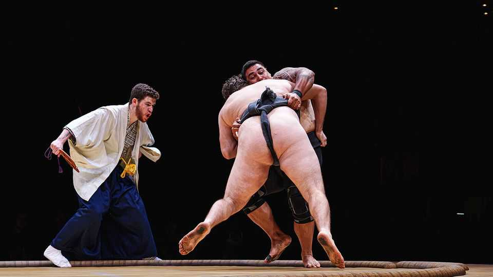

Professional sumo wrestling comes to America
Meet the people betting Americans will swoon over Japan’s ancient pastime

Oct 15th 2026
ON A RECENT evening in Peachtree City, Georgia, Katie Hardeman was training her Black Dragon “boys”. For two hours she put the aspiring sumo wrestlers—mostly middle-aged men—through a gruelling workout. Then she invited your correspondent to have a go, strapping her into a mawashi, the Japanese loincloth, and instructing her to charge headfirst into a man’s chest, palms aiming for “tits and pits”. “There’s something electric about it,” says Ms Hardeman, a combat veteran. “We’re trying to overcome the negative connotation in our country that sumo is just fat guys in diapers pushing each other.”
On October 10th the Sumo Championship League held its debut match in Austin, Texas. The league is the first of its kind on this side of the Pacific. Sixteen wrestlers competed until the third-seed, a 21-year-old Floridian, won gold.
Stuart Snyder, the entertainment guru behind the event, was once chief operating officer at World Wrestling Entertainment, which for decades has staged fake smackdowns. After he saw cornhole, in which adults toss bean bags through a punctured plank, go viral online, he decided fringe sports were having a moment—and sumo was next. With $5m in hand, he is betting he can hook Americans on a pastime rooted in Asian traditions.
Many of the league’s aspiring stars are new to it. Jonithan “Jiva” Pilgrim was living at a Hare Krishna commune when he discovered sumo on YouTube. Realising he had “no other nature than to be a warrior”, he joined a club and gained weight on a diet of whey shakes, tofu and ghee. His club-mate Dominus “Domzilla” Davis-Williams, the league’s heaviest wrestler at 450lbs (204kg), is a former player of American football. Sumo “felt familiar”, he says. And it does wonders for his “body positivity”.
To help sumo grow, a few customs may adapt. In Austin some wrestlers went “traditional” and wore just the mawashi, leaving their buttocks exposed. Others snuck shorts underneath. Americans, reckons Mr Pilgrim, will swoon for sumo, but they may not be ready for “that much naked male body”. ■
Stay on top of American politics with The US in brief, our daily newsletter with fast analysis of the most important political news, and Checks and Balance, a weekly note that examines the state of American democracy and the issues that matter to voters.